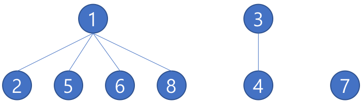

Disjoint Set (Union Find)
Disjoint Set (서로소 집합 자료구조) 이란?
서로 중복되지 않는 부분 집합들로 나눠진 원소들에 대한 정보를 저장하고 조작하는 자료구조이다.
다음과 같은 원소들이 있을 때, 각 원소들이 연결되어 있는 관계를 입력 하면 다음과 같은 집합이 나온다.
구현
배열을 이용해서 Tree를 만들어 구현하며 Root노드를 집합을 구분하는 ID로 사용한다.

초기화
int[] root = new int[size];
for(int i = 0; i < size; i++)
root[i] = i;
원소들간에 연결된 정보가 없기 때문에 Root로 자기 자신을 가지고 있다.
Find 함수
int Find(int x){
if(x == root[x]){
return x;
}else{
int y = Find(root[x]);
root[x] = y;
return y;
}
}
x가 Root인 경우 x를 반환한다.
x가 Root가 아니면 Root를 찾을 때 까지 반복한다.
Union 함수
void Union(int x, int y){
x = Find(x);
y = Find(y);
root[y] = x;
}
x와 y의 원소가 입력되면 x의 Root 노드와 y의 Root 노드를 저장해서 y의 Root 노드를 x로 설정해준다.
최적화
초기화
int root[size];
int rank[size];
for (int i = 0; i < size; i++) {
root[i] = i;
rank[i] = 0;
}
트리의 높이를 저장해줄 rank를 초기화 시켜준다.
Find 함수 최적화
int Find(int x){
if(rott[x] == x){
return x;
} else {
return root[x] = find(root[x]);
}
}
트리의 구조가 최대가 될 때 시간 복잡도가 최악이 되기 때문에
경로 압축을 통해 Find하면서 만난 모든 값의 부모 노드를 root로 만들어 최적화 시켜준다.
Union 함수 최적화
void Union(int x, int y){
x = find(x);
y = find(y);
if(x == y)
return;
if(rank[x] < rank[y]) {
root[x] = y;
} else {
root[y] = x;
if(rank[x] == rank[y])
rank[x]++;
}
}
x, y의 Root가 같으면 같은 트리임으로 합치지 않는다.
x, y의 높이를 비교하여 높이가 늦은 트리를 높이가 높은 트리 밑에 넣는다.
만약 높이가 같다면 합친 후 x의 높이를 하나 더해준다.